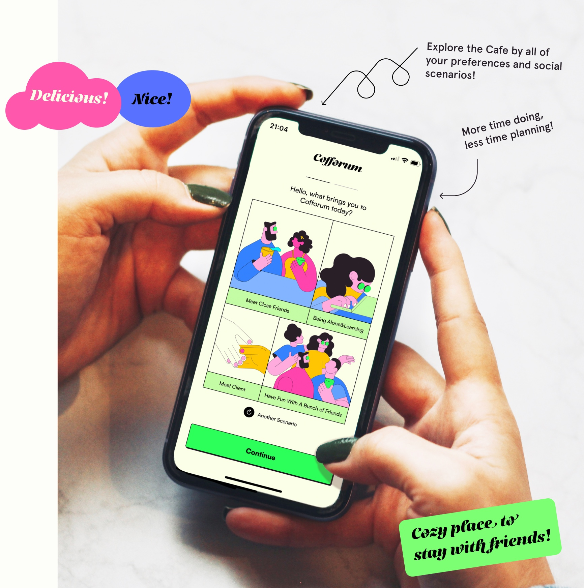

Cofforum is a user-friendly mobile app designed for coffee enthusiasts to discover global independent cafes in a playful and efficient way, utilizing comprehensive UX design processes. The app provides personalized recommendations based on users' tastes and allows them to create and share their own café albums with the world.

Role
UX Designer, Artist, Developer
year
2023.1-2023-4
KEY WORDS
City Exploration & Digitalization, Cafes, Social Interaction, App Design
* Independent project
vision
Scope
Cofforum is an application tailored for coffee enthusiasts to explore global independent cafes in a playful, efficient, and enjoyable manner. The app's development involved comprehensive UX design processes, including market research, competitor audits, interviews and behavioral studies of coffee lovers, persona creation, wireframing, information architecture, and visual UI design, culminating in usability testing.
Result
I developed a user-friendly mobile app that caters to social scenarios and coffee lovers' preferences, helping them discover a variety of independent cafes. Users receive tailored recommendations based on their unique tastes and can create and share their personalized café albums with the world!

research through design approach

background
"Why Independent Cafe?"
Independent cafes, which dominate the café market in China, particularly in third-tier cities, are increasingly popular among young people seeking unique tastes and social spaces that reflect their individuality, while the saturation of chain stores in major cities has sparked a growing demand for personalized experiences.

User Research
What Do Coffee Lovers Do?
According to the social behavior theory of Vitas Mehta, Social distance and physical space vary with the level of relationships, ranging from intimacy to unfamiliarity, which influences social behaviors classified as enduring, fleeting, and passive. Close physical proximity occurs among intimate members like family and lovers, while distant gazes are common among strangers.

User Survey
The questionnaire was distributed among coffee lovers on Facebook and WeChat, gathering insights from 83 global participants about their preferences for accessing independent cafes, including their needs and potential activities. To deepen my understanding, I conducted interviews with three coffee lovers from diverse backgrounds, who shared their motivations and challenges in exploring cafes, ultimately summarizing their needs and expectations in five keywords, revealing significant differences among them.

Competitors Audit & User Journey
The competitor analysis identifies two primary methods for exploration: recommendations on social media platforms like The Red Book and travel apps. While cafes discovered through social media tend to be of higher quality and better meet users' needs, they often have low conversion rates due to the time required to transition from collecting recommendations to physically visiting the locations. In contrast, travel apps facilitate finding nearby cafes but can be frustrating and time-consuming due to the extensive searching involved.

Storyboard
Hey, Jason.
What Stops You From Exploring Independent Cafes?
The storyboard explores a day in the life of the target persona, Jason, delving into the reasons that hinder their exploration of cafes in the city.

design goal
Problems, Goals, Solutions
In summary, the main pain point is that "the exploration method is boring and time-consuming." Ordinary platforms, overloaded with information about stores, struggle to meet the discerning tastes of niche coffee lovers. To address this, I have added features such as coffee shop tags, personalized recommendations, and options for recording and sharing experiences, enabling users to explore more efficiently and enjoy the process.

ideation
Info Architecture
The app features a login interface where users can select their social venues and coffee preferences a map view displaying nearby coffee shop characteristics, and detailed store information that includes special tags, key amenities, and top reviews, allowing users to self-tag after checking in, similar to Douban movie ratings.

Wireframe
The user flow provides a comprehensive pathway, guiding users from the landing page to the exploration and collection of their preferred coffee shops.

visual design
Trendy Youth and Retro Culture
The design incorporates bold and bright colors that resonate with the aesthetics of trendy young individuals, while a classic serif font is utilized for the titles to emphasize the timeless cultural attributes of niche coffee shops.

HIfi prototype
Let's see how it works!
1 | Landing
On the login interface, users can choose their social venues and coffee preferences, such as being a freelancer who enjoys handmade coffee, street views, and reading-friendly environments.

2 | Discover
Users can easily view the features of nearby coffee shops on the map interface and select their preferred option.
3 | Coffee FM.
When people choose to visit a coffee shop instead of ordering takeout, they often select the ambiance based on their mood. The aroma of coffee and the environment inspire happiness, and for those looking to explore, Coffee FM creates personalized recommendations using mood keywords.

4 | Detail Page, Collect & Profile
In the store details, users can view special tags, main facilities, and top three reviews. After checking in, users can tag themselves, similar to Douban movie ratings.

conclution
Learn and Reflection
As a personal project, it addresses the "time-consuming and tedious" nature of discovering these venues. The app offers trendy and engaging exploration methods for young coffee enthusiasts, recommending shops based on social needs, collections, and sharing experiences. I conducted research on human and social interactions in cafes, utilizing environmental behavior methodologies.